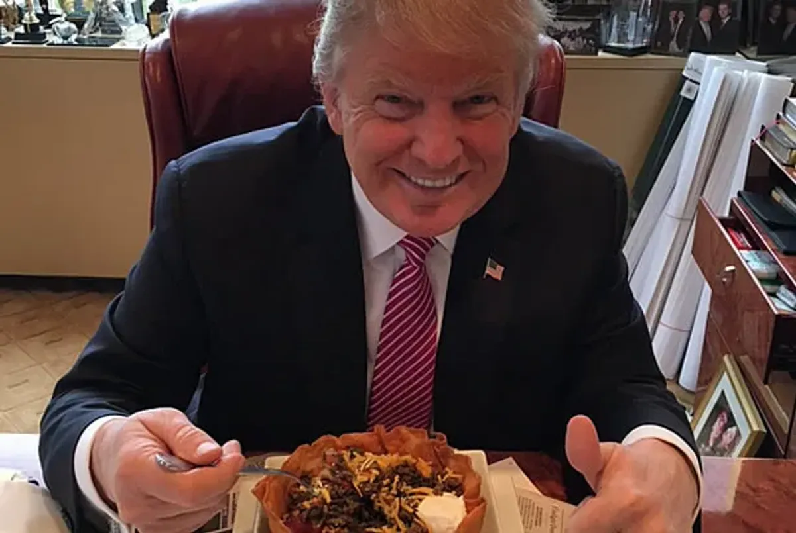

Chicken Fajitas
Description
This is my favorite meal to make after a hard day working out. It's nutritionally complete, very tasty, and packed with protein.
It's also easy to cook completely on the stovetop with normal ingredients everyone has lying around. Plus, it's way better than stereotypical white people taco night. Impress your aging parents with this tasty recipe!

Ingredients
- 16 oz Chicken breasts
- Salt and Pepper
- 1/4 cup oil
- Adobo Seasoning
- Mojo Marinade
- 2 bell peppers
- 2 cloves garlic
- 1 large red onion
- tortillas
- cheese of your choice
- salt and pepper to taste
- 1 cup fresh cilantro
- 1 whole lime, quartered
- Any salsa
- Hot sauce (I really like valentina
Steps
- Firstly, you want to prepare your chicken breast. If they are big and thick, butter fly them. If they are tendie sized, then they are okay. Regardless, you need to make sure they are dry, and then flatten them. I like to use my fist
- Nextly, season your chicken. I like to cover generously with adobo, a pinch of salt, and whatever other seasoning I have. Get it on both sides
- Furthermore, sear the chicken on high heat. You want to sear it on both sides for around 4 minutes. Do not move it for at least a few minutes once it's on the pan. You want to give it time to develop that beautiful pornographic crust.
- Add mojo when you flip, let evaoporate while chicken cooks.
- Moreover, you can add your garlic and onions to the same skillet (use more oil as needed) Cook until slightly caramelized.
- Garnish with lime and cillantro; either heat your tacos up in the microwave, or toast in a different pan. Choose your adventure.